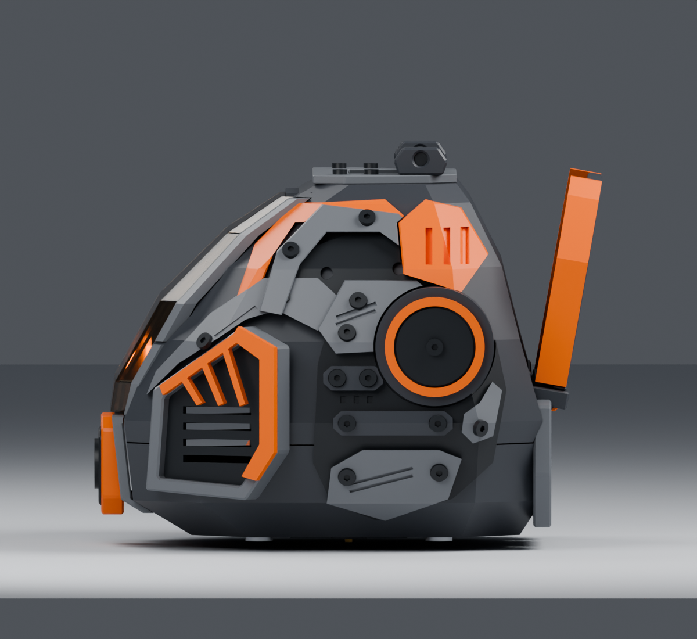
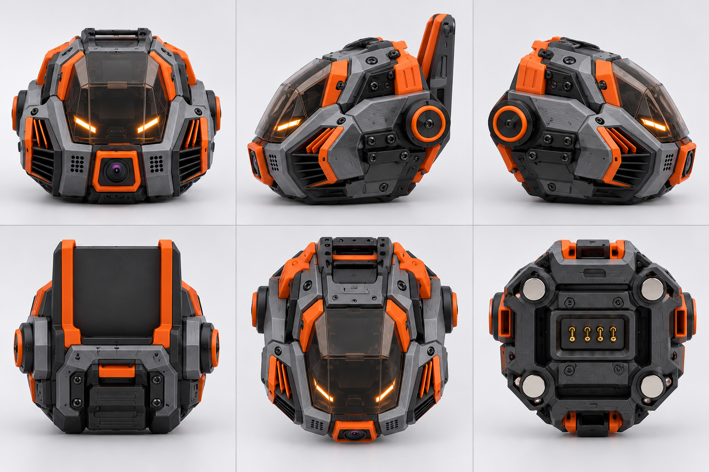

2026-10-30 · 已检查保存的 CAD 实体 · 本报告未修改几何，不是打印发布
当前模型已经有完整结构细节，但侧面主轮廓及分件逻辑仍需重做。优先统一连续侧盖、降低顶部附件的视觉高度，再处理橙色饰件及舱罩制造。不要用整机缩放去替代真实尺寸设计。


| 测量范围 | 尺寸 |
|---|---|
| 头部，含提手及底部接口；不含手机架和桌面底座 | 118.2 × 102.9 × 88.2 |
| 主壳 P01＋P02 | 100.0 × 93.0 × 78.0 |
| 完整装配，含手机架及桌面底座 | 118.2 × 112.9 × 110.5 |
测量直接来自最新保存的 Lingxi_Cockpit_R06.FCStd，使用 optimalBoundingBox。普通 BoundBox 对曲面可能明显偏大。逐项复核后，已有零件清单尺寸与精确测量一致，125 个体积也与清单一致。
此前约 160 × 140 × 145 mm 只是未确认草案；当前外形和该草案不是同一尺寸基准。实际主板、镜头、喇叭、灯板、供电及手机尺寸均待定，因此没有进行整机缩放。
目前：69 个不透明打印候选件＋2 个导光件＋12 个透明片＋42 个五金占位。材质颜色不等于实际材料种类，五金占位也不能计为打印件。
| 部位 | 下一版处理 |
|---|---|
| 每侧灰黑拼甲、检修条、格栅 | 合并为连续侧盖；格栅和检修条转为一体特征。仍保留可拆维护路径。 |
| 圆形盖 | 底盘与黑色中心并入侧盖，仅保留独立橙色环。 |
| 肩部橙色件 | 缩减为少量完整嵌件，避免小薄片层层叠装。 |
| 顶盖、内衬、把手座 | 整合为低矮模块；真实承重能力另行验证。 |
| 12 片透明舱罩 | 评估一体成型罩或 3–4 片可加工面板；不能把不共面的 12 片直接当成平板合并。 |
| 手机架及连接肋 | 整合支承主体；尺寸确定后重做接头和装配间隙。 |
默认简化方向：深灰主体＋少量橙色独立件，黑色装饰并入主体。合并必须生成有实际连接的单实体，不能只把多个零件放进一个组或导出为一个文件。
125/125 个 CAD 对象均为有效单实体；这只证明实体几何有效，不证明壁厚、支撑、孔位、装配或实际打印可行。现版几何未改，保留作为下一版基线。
后续顺序：确定尺寸包络 → 重画侧面大轮廓 → 重建连续侧盖及少量嵌件 → 核对硬件安装 → 验证装配与打印分件。